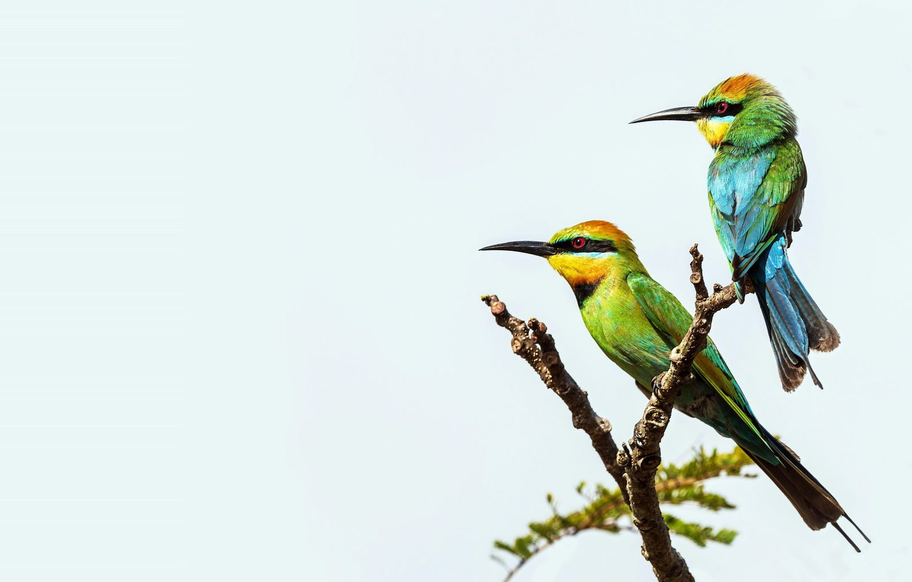
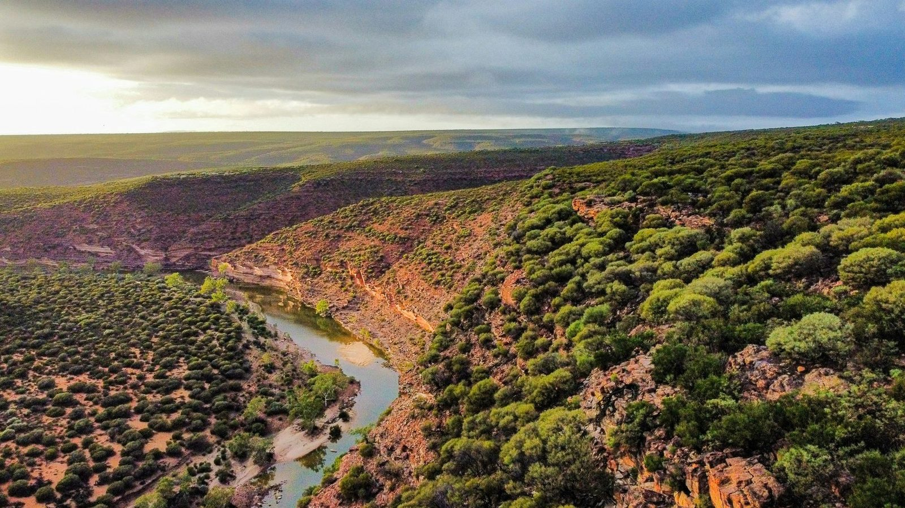
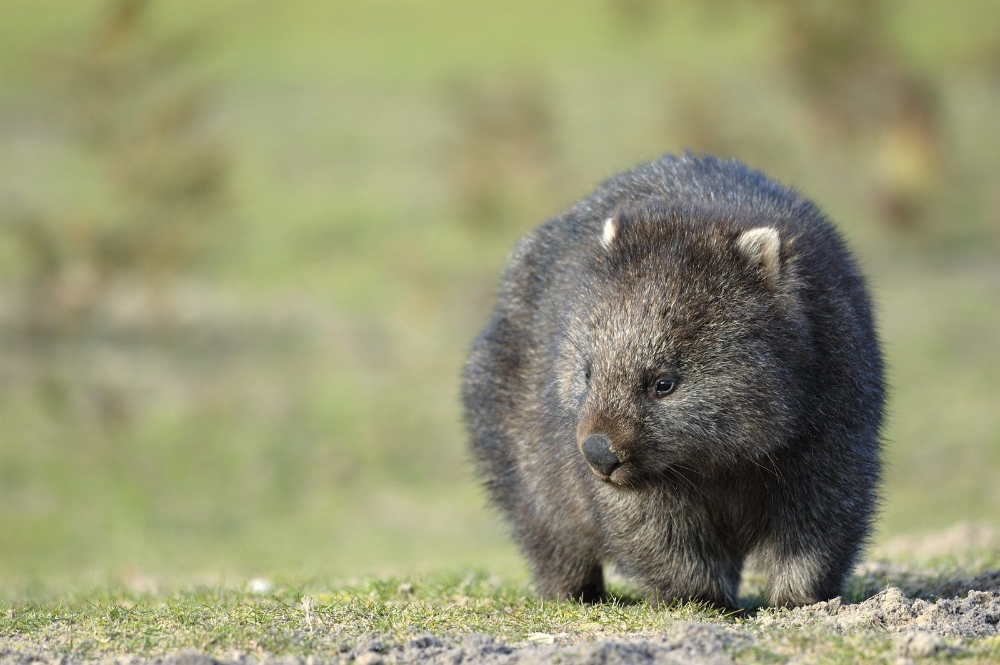
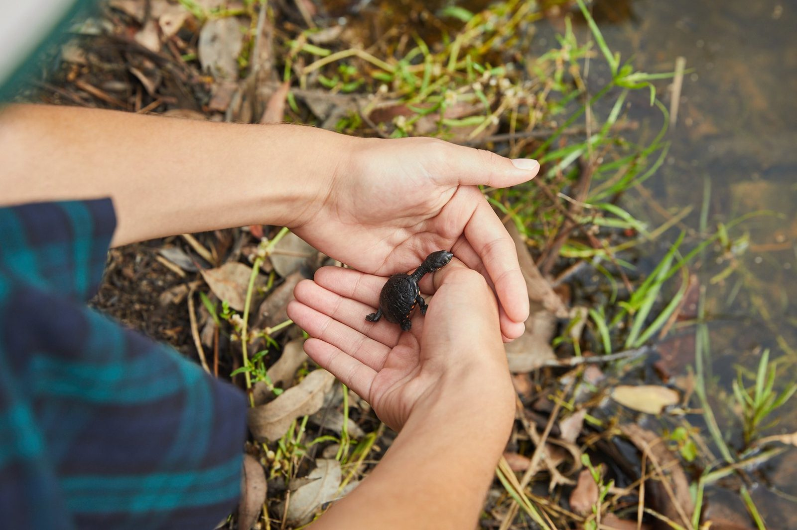
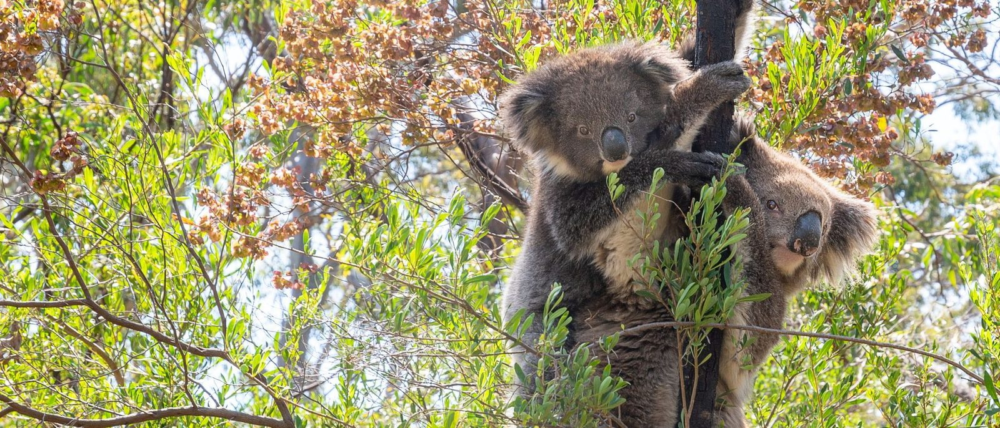
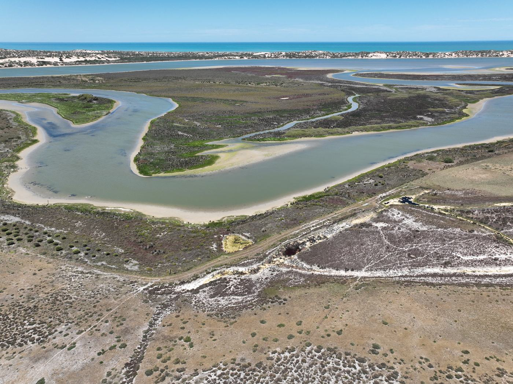

Keeping Australia wild since 1970
We bring First Nations organisations, government, communities and funders together to protect Australia’s most important landscapes and wildlife, from first opportunity to measurable impact.
Australia is home to life that exists nowhere else on Earth. Together, we can keep it that way.
Give, volunteer or leave a gift
Donate, Give a Tree, volunteer with your team or leave a gift in your will.
Ways to get involved → For government, foundations & partnersPartner with us at landscape scale
How we work with government, foundations, businesses and major donors, and the results we report.
Partner with us →Give a Tree this Christmas: $10 plants a native tree where habitat needs it most, with a personalised certificate.
Where we focus.

Growing National Parks
We expand and protect conservation spaces to safeguard critical habitats and support resilient ecosystems.
See the projects →
Saving Species
We protect Australia's most vulnerable species by restoring habitats, creating wildlife corridors, and supporting targeted conservation programs.
See the projects →
Healing the Land
We restore landscapes affected by bushfires, floods and unsustainable activities through our Landscape Resilience Program.
See the projects →What your support looks like on the ground.
protected for national parks and reserves

national parks and reserves created or expanded
trees, shrubs and seedlings planted in key priority landscapes
added to National Park status
under active restoration
wombat mange treatments delivered
Figures from the FNPW Impact Report.
Our work.
We bring the right funding and the right people to the places and species that need it most.

Mundoo Island Station
1,900 hectares secured in 2025, now being added to Coorong National Park.
Read the story →
Curb Wombat Mange Program
500 volunteers trained and equipped to treat wombats for mange.
Read the story → Healing the LandNSW, VIC, SA, ACT
Healing the LandNSW, VIC, SA, ACTNative Plant Nurseries
One million trees grown and planted through 30+ community nurseries.
Read the story → Growing National ParksFlinders Ranges, SA
Growing National ParksFlinders Ranges, SANilpena National Park
60,000 hectares proclaimed national park, home to the richest record of early complex life on Earth.
Read the story →
1 Million Turtles
Citizen science for freshwater turtles, awarded the 2023 Eureka Prize.
Read the story → Healing the LandVIC, SA, NSW
Healing the LandVIC, SA, NSWFire Wise
14 community nurseries growing native plants that help landscapes withstand fire.
Read the story → Growing National ParksSouthern Flinders, SA
Growing National ParksSouthern Flinders, SARemarkable Southern Flinders
Connecting 30,000 hectares of reserves into one park, on Nukunu Country.
Read the story → Saving SpeciesArnhem Land, NT
Saving SpeciesArnhem Land, NTWarddeken Mayh Recovery
Indigenous-led recovery of threatened mammals across 1.4 million hectares.
Read the story →
Cultivating Koala Habitat
2,000 local plants in the ground, with 95 per cent still alive.
Read the story → Growing National ParksJervis Bay, NSW
Growing National ParksJervis Bay, NSWHeritage Estates
More than 530 properties acquired to grow Jervis Bay National Park.
Read the story →
Nectar Sippers
130 hectares of woodland protected for nectar-feeding birds.
Read the story → Healing the LandAustralia-wide
Healing the LandAustralia-wideTangaroa Blue
Eleven million beach clean-up records, turned into plans that stop rubbish at the source.
Read the story →
Partnerships that change whole landscapes.
We work with government, foundations, businesses and philanthropists to fund and deliver conservation at scale, from securing land for new national parks to multi-year programs that cross state lines.
Fifty-five years of looking after the wild.
It started in 1970 with a single gift and a simple belief: that Australia’s wild places, and the creatures found nowhere else, are worth standing up for. That belief has grown into lasting change: land protected forever, species brought back from the edge, and landscapes restored after fire and flood.
We have never done it alone. Every hectare protected and every species recovered has been the work of First Nations peoples, scientists, supporters and local communities, caring for Country side by side. Our latest Impact Report shows where that support goes and what it achieves.
Planting our millionth tree was more than a milestone, it was a catalyst for change in our community. We witnessed firsthand how reforesting our land can renew both nature and community spirit.
Stories from the bush, straight to your inbox.
Once a month we send project updates, species spotlights and the small wins that rarely make the news, written by the people doing the work on the ground.